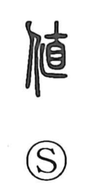

値

Uncategorized
Kun: ne, atai, au | On: chi
value ・ price ・ to meet
Explanation
A phono-semantic graph with the person element on the left and 直 as the phonetic on the right, 値 takes its on-reading from 直 (choku). Shirakawa notes that 直, close to 徳 in sound and sense, evokes the idea of facing what is straight and essential. In early usage, as recorded in the Shuowen, the character means “to meet, to encounter; to see,” and it was used with that sense in expressions glossed as au. Later it was also written in place of 直 to denote “price” and “value,” giving the modern Japanese senses ne and atai.